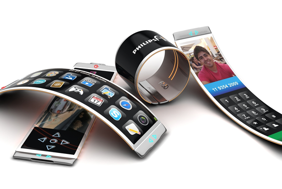

A principios de los años 90, los teléfonos móviles eran poco más que una costosa curiosidad.
Hoy muchos de nosotros vivimos rodeados de teléfonos móviles inteligentes y la tecnología evoluciona casi enfrente de nuestros ojos.
¿Pero a dónde se dirige el futuro de los smartphones? ¿Qué clase de aparatos usaremos dentro de 20 años?
En el World Mobile Congress de Barcelona, BBC Mundo tuvo la oportunidad de consultar a expertos en tecnología móvil sobre el futuro que le depara al celular inteligente.
20 años de celular
En 1983 aparecía en el mercado el primer modelo de teléfono móvil, era el Motorola DynaTAC y pesaba 800 gramos.
Han pasado más de 20 años y el celular ha ido perdiendo peso, cuenta con baterías más ligeras, pantallas cada vez más nítidas, toma fotografías y con la incorporación de internet, incorpora cada vez más funciones.
En el Mobile World Congress se presentaron celulares inteligentes más baratos, con imágenes de alta definición, conectados a pulseras y relojes inteligentes y con sistemas biométricos.
Los expertos en tecnología móvil dicen que llegados a este punto, es difícil imaginarse cómo será el smartphone del futuro, sobre todo porque cabe la posibilidad que éste de alguna forma termine desaparecieron
"No estamos seguros ni de si tendremos teléfonos como estos", dijo a la BBC, "quizás la comunicación estará en algún lugar de mi bolsillo, quizás en alguna pantalla en mis gafas, quizás la música en un dispositivo en mi oído, se darán muchas posibilidades".
Sin embargo, Ben Wood de la firma de análisis tecnológico CCS Insight, cree que el futuro del celular inteligente podría seguir dos vías muy distintas en su evolución.
"Piensen en los autos. No han evolucionado tanto en 20 años, así que los teléfonos podrían verse como se ven hoy".
"O en un mundo alternativo, alguien solucionaría el problema de la durabilidad de las baterías, así que podremos tener aparatos más pequeños, pantallas flexibles, pero también podríamos interactuar con teléfonos de una forma diferente".
En lo que muchos están de acuerdo, es que la comunicación móvil se va a diversificar y el teléfono simplemente será una pieza más dentro de ese sistema.
Mundo conectado
"El teléfono va a ser el aparato que te conecte, pero no a través del aparato en sí mismo", opina James Bruce de la empresa británica de desarrollo de software ARM Holdings.
Y es que el mundo de la comunicación móvil, dicen los expertos, se dirige a la era del "internet de las cosas" de la ciudad conectada. Y en ese escenario, múltiples aparatos actuarán de intermediarios en esa comunicación. Por lo que el celular inteligente, de seguir existiendo, sería como el equivalente al control remoto de nuestro televisor.
La presidenta de Intel cree que los smartphones no existirán dentro de 20 años.
"No creo que haya celulares en 20 años. Lo que pasará, que ya estamos viendo, es la integración de las tecnologías de comunicación en otros productos", afirma Renee James, presidenta de Intel.
"Se dará la posibilidad de conectarte a cualquier computadora a tu alrededor y de comunicarte a través de ella".
"Tendremos tantas cosas que serán inteligentes, no sólo teléfonos, tabletas, relojes u objetos para hacer ejercicio", remata Mitchell Baker, fundadora de Mozilla.
"Nuestros medidores de electricidad, quizás nuestros zapatos o las mesas, todo tipo de cosas serán inteligentes y estarán enviando datos a nuestro alrededor"

 5
5